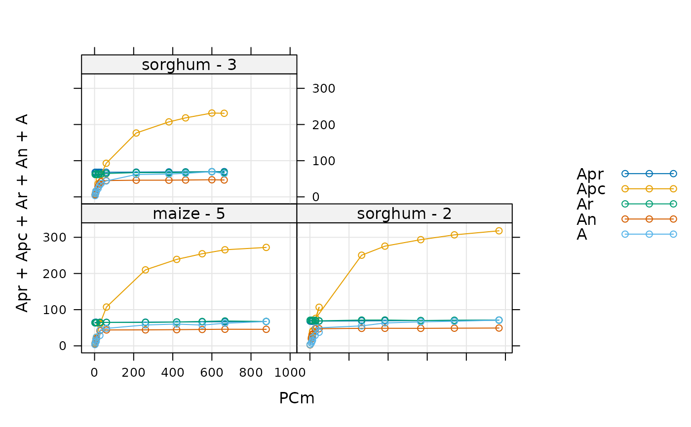

Make an initial guess of C4 photosynthesis parameter values for one curve
initial_guess_c4_aci.RdCreates a function that makes an initial guess of C4 photosynthesis model
parameter values for one curve. This function is used internally by
fit_c4_aci.
Values estimated by this guessing function should be considered inaccurate, and should always be improved upon by an optimizer.
Usage
initial_guess_c4_aci(
alpha_psii,
gbs,
gmc_at_25,
Rm_frac,
pcm_threshold_rlm = 40,
x_etr = 0.4,
a_column_name = 'A',
ci_column_name = 'Ci',
gmc_norm_column_name = 'gmc_norm',
j_norm_column_name = 'J_norm',
kp_column_name = 'Kp',
rl_norm_column_name = 'RL_norm',
total_pressure_column_name = 'total_pressure',
vcmax_norm_column_name = 'Vcmax_norm',
vpmax_norm_column_name = 'Vpmax_norm'
)Arguments
- alpha_psii
The fraction of photosystem II activity in the bundle sheath (
dimensionless). Ifalpha_psiiis not a number, then there must be a column inrc_exdfcalledalpha_psiiwith appropriate units. A numeric value supplied here will overwrite the values in thealpha_psiicolumn ofrc_exdfif it exists.- gbs
The bundle sheath conductance to CO2 in
mol m^(-2) s^(-1) bar^(-1). Ifgbsis not a number, then there must be a column inrc_exdfcalledgbswith appropriate units. A numeric value supplied here will overwrite the values in thegbscolumn ofrc_exdfif it exists.- gmc_at_25
The mesophyll conductance to CO2 diffusion at 25 degrees C, expressed in
mol m^(-2) s^(-1) bar^(-1). Ifgmc_at_25is not a number, then there must be a column inrc_exdfcalledgmc_at_25with appropriate units. A numeric value supplied here will overwrite the values in thegmc_at_25column ofrc_exdfif it exists.- Rm_frac
The fraction of the total mitochondrial respiration that occurs in the mesophyll. If
Rm_fracis not a number, then there must be a column inrc_exdfcalledRm_fracwith appropriate units. A numeric value supplied here will overwrite the values in theRm_fraccolumn ofrc_exdfif it exists.- pcm_threshold_rlm
An upper cutoff value for the partial pressure of CO2 in the mesophyll (in
microbar) to be used when estimatingRLm.- x_etr
The fraction of whole-chain electron transport occurring in the mesophyll (dimensionless). See Equation 29 from S. von Caemmerer (2021).
- a_column_name
The name of the column in
rc_exdfthat contains the net assimilation inmicromol m^(-2) s^(-1).- ci_column_name
The name of the column in
rc_exdfthat contains the intercellular CO2 concentration inmicromol mol^(-1).- gmc_norm_column_name
The name of the column in
rc_exdfthat contains the normalized mesophyll conductance values (with units ofnormalized to gmc at 25 degrees C).- j_norm_column_name
The name of the column in
rc_exdfthat contains the normalizedJvalues (with units ofnormalized to J at 25 degrees C).- kp_column_name
The name of the column in
rc_exdfthat contains the Michaelis-Menten constant for PEP carboxylase carboxylation inmicrobar.- rl_norm_column_name
The name of the column in
rc_exdfthat contains the normalizedRLvalues (with units ofnormalized to RL at 25 degrees C).- total_pressure_column_name
The name of the column in
rc_exdfthat contains the total pressure inbar.- vcmax_norm_column_name
The name of the column in
rc_exdfthat contains the normalizedVcmaxvalues (with units ofnormalized to Vcmax at 25 degrees C).- vpmax_norm_column_name
The name of the column in
rc_exdfthat contains the normalizedVpmaxvalues (with units ofnormalized to Vpmax at 25 degrees C).
Details
Here we estimate values of J_at_25, RL_at_25,
Vcmax_at_25, Vpmax_at_25, and Vpr from a measured C4 CO2
response curve. It is difficult to estimate values of alpha_psii,
gbs, gmc_at_25, and Rm_frac from a curve, so they must be
supplied beforehand. For more information about these parameters, see the
documentation for calculate_c4_assimilation. To estimate these
parameter values, we use several equations from S. von Caemmerer, "Biochemical
Models of Leaf Photosynthesis" (CSIRO Publishing, 2000)
[doi:10.1071/9780643103405
]. Any equation numbers referenced below are from
this book.
Estimating RL: An estimate for
RLmcan be obtained using Equation 4.26, which applies for low values ofPCm. In this situation,PCm + Kpcan be approximated byKp, and Equation 4.26 simplifies to a linear relationship between the net assimilationAnandPCm:An = (gbs + Vpmax / kP) * PCm - RLm. So, to estimateRLm, we make a linear fit ofAnvs.PCmin the lowPCmrange where this equation is expected to be valid. ThenRLmis given by the negative of the intercept from the fit. In the C4 assimilation model, we assume thatRLm = Rm_frac * RL, so we can also estimateRL = RLm / Rm_fracfrom this value.Estimating Vpmax: An estimate for
Vpmaxcan also be obtained from Equation 4.26. In this case, we simply solve the equation forVpmaxand use it to calculate a value ofVpmaxat each point in the curve from the measured values ofAnandPCm, the input value ofgbs, and the value ofRLmestimated above. In the PEP-carboxylation-limited range, the estimated values ofVpmaxshould be reasonable. In other parts of the curve, the assimilation rate is limited by other factors, soAnwill be smaller than the PEP-carboxylation-limited values, causing the estimated values ofVpmaxto be smaller. So, to make an overall estimate, we choose the largest estimatedVpmaxvalue.Estimating Vcmax: An estimate for
Vcmaxcan be obtained by solvingAn = Vcmax - RLforVcmax, similar to the method used to estimateVpmax.Estimating Vpr: An estimate for
Vprcan be obtained by solvingAn = Vpr + gbs * PCm - RLmforVpr, similar to the method used to estimateVpmax.Estimating J: First, an estimate for
Jcan be obtained by solvingAn = (1 - x_etr) * J / 3 - RLforJ. Then, estimates ofJcan be made fromJandQin. The largest value ofJ / J_normis chosen as the best estimate forJ_at_25.
Note that a key assumption underlying this approach is that the net
assimilation can be reasonably approximated by
An = min(Apc, Apr, Ar, Ajm) (Equations 4.19, 4.25, 4.45, and 4.47
combined). While this approximation seems to work well for low values of
PCm, it tends to deviate significantly from the more accurate version
at higher values of PCm, predicting values that are noticably smaller.
Thus, the values of Vcmax and Vpr estimated using this procedure
are unlikely to be accurate. This is not a problem; instead it simply
highlights the importance of improving this initial guess using an optimizer,
which can be accomplished via fit_c4_aci.
Value
A function with one input argument rc_exdf, which should be an
exdf object representing one C4 CO2 response curve. The return value of
this function will be a numeric vector with eight elements, representing the
values of alpha_psii, gbs, J_at_25, RL_at_25,
rm_frac, Vcmax_at_25, Vpmax_at_25, and Vpr (in
that order).
Examples
# Read an example Licor file included in the PhotoGEA package
licor_file <- read_gasex_file(
PhotoGEA_example_file_path('c4_aci_1.xlsx')
)
# Define a new column that uniquely identifies each curve
licor_file[, 'species_plot'] <-
paste(licor_file[, 'species'], '-', licor_file[, 'plot'] )
# Organize the data
licor_file <- organize_response_curve_data(
licor_file,
'species_plot',
c(9, 10, 16),
'CO2_r_sp'
)
# Calculate temperature-dependent values of C4 photosynthetic parameters
licor_file <- calculate_temperature_response(licor_file, c4_temperature_param_vc)
# Calculate the total pressure in the Licor chamber
licor_file <- calculate_total_pressure(licor_file)
# Create the guessing function, using typical values for the alpha_psii, gbs,
# gmc_at_25, and Rm_frac: 0, 0.003, 1, and 0.5
guessing_func <- initial_guess_c4_aci(0, 0.003, 1, 0.5)
# Apply it and see the initial guesses for each curve
print(by(licor_file, licor_file[, 'species_plot'], guessing_func))
#> $`maize - 5`
#> [1] 0.00000 0.00300 1.00000 267.72760 1.00000 0.50000 38.46066
#> [8] 215.05235 65.52684
#>
#> $`sorghum - 2`
#> [1] 0.000000 0.003000 1.000000 290.584881 1.347936 0.500000 43.328786
#> [8] 327.802842 69.313852
#>
#> $`sorghum - 3`
#> [1] 0.00000 0.00300 1.00000 272.76368 1.00000 0.50000 38.14046
#> [8] 191.33879 68.67666
#>
# A simple way to visualize the guesses is to "fit" the curves using the null
# optimizer, which simply returns the initial guess
aci_results <- consolidate(by(
licor_file,
licor_file[, 'species_plot'],
fit_c4_aci,
optim_fun = optimizer_null()
))
plot_c4_aci_fit(aci_results, 'species_plot', 'Ci', ylim = c(-10, 100))
